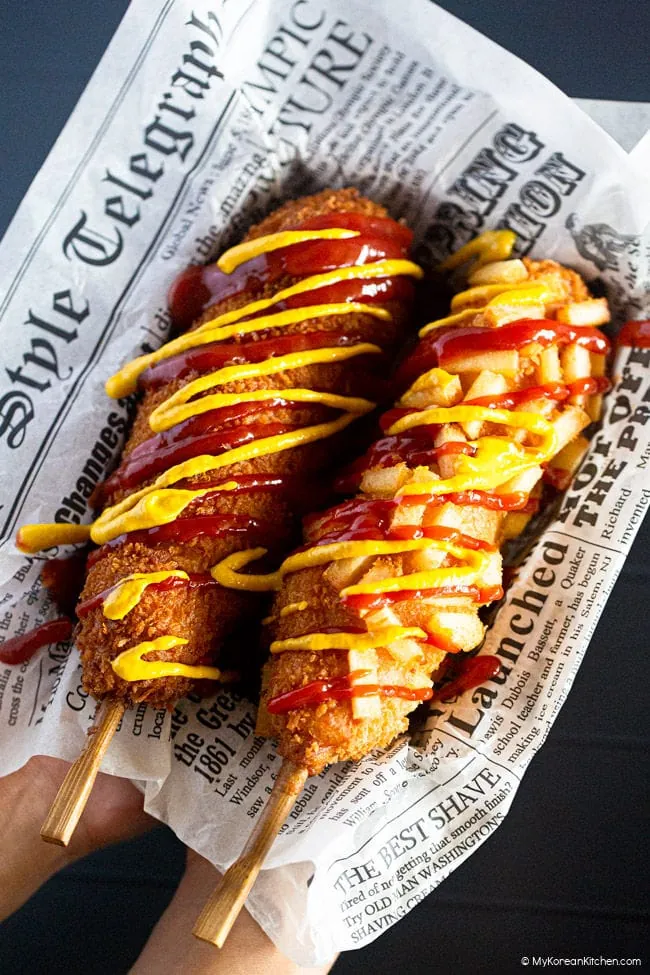

Korean Corn Dog

Description
Get ready for a delicious and exciting snack with a Korean Corn Dog! This treat is similar to a Dagwood Dog, but has the added crunch of panko breadcrumbs. Making it even more enjoyable, you can also choose a variety of coatings such as french fries or dry ramen noodles. Let’s get to it!
Ingredients
BATTER
- 2 Tbsp raw sugar
- 1 tsp fine sea salt
- 1 cup water, warm
- 1 tsp active dry yeast
- 1 ¾ cup all purpose flour
- ¼ cup glutinous rice flour (sweet rice flour or mochiko)
FILLING
- 4 hot dog sausages (e.g. Frankfurt Sausage)
- 2 Tbsp all purpose flour
- ¾ cup panko breadcrumbs
- (Optional) cheese block (e.g. mozzarella, cheddar, and cream cheese), about 2cm x 6cm / 0.8 inch x 2.3 inch per corn dog
TOPPINGS (OPTIONAL)
- 280 g / 9.8 ounces french fries (about 2 cups once cut into small pieces)
- 1 to 2 packs instant ramen noodles
SAUCE
- White sugar, granulated
- American mustard sauce
- Ketchup
Steps
BATTER
-
Prepare a 2L food container (or a mixing bowl) and combine the sugar, salt and the warm water (about 50 degrees Celsius / 122 degrees Fahrenheit). Stir well.
-
Add the yeast and stir it around. Then, allow it to settle for a few minutes while it is dissolved. Next, incorporate the flour and glutinous rice flour together. Mix with a spatula until you achieve an even texture without any lumps.
-
Cover the container or bowl with a lid or cling wrap and set it aside for an hour at room temperature until the dough rises.
-
Once the dough has doubled in size, mix it well with a spatula. Set aside.
TOPPINGS (OPTIONAL)
French Fries
- Cut the french fries into small pieces (about 1.5 cm/0.6 inch) and set them aside on a large plate.
Ramen Noodles
-
Gently break up the instant noodles into small pieces while they are still in their packet, then transfer them to a large plate and set aside.
SHAPING AND FRYING
-
Fill a fryer or deep pan with a generous amount of oil and bring it to a boil. The pan should be wide enough to immerse at least one hot dog skewer. The oil is ready when it reaches 175 degrees Celsius or 350 degrees Fahrenheit. It takes about five minutes for the oil to reach this temperature at medium-high heat.
-
Create two separate plates - one with flour and the other with panko breadcrumbs. Then line up your work station in this order: flour plate, corn dog batter (that you should have prepared beforehand), french fries or dry ramen noodles (optional), and finally panko breadcrumbs.
-
Skewer the hot dog sausages and cheese block (optional) onto wooden chopstick. If using other skewers, ensure they can hold the weight of the sausages and cheese.
-
Cover the hot dog skewers with flour (from step 2) so that the batter will stick easily.
-
Evenly cover the hot dog skewers with the batter one at a time, from the top using a circular motion until they are fully covered. Use one hand to hold the hot dog skewer, and use the other hand to spread the batter thinly and evenly. As the batter has a sticky and gluey consistency, wearing food-save gloves might help you maneuver your hands around.
-
If you want to add an optional topping, roll the battered skewer on a topping plate (e.g. french fries or crumbed ramen noodles) until it is completely coated. Then, roll it on the panko breadcrumbs until the hotdog is thoroughly covered.
-
Drop the hot dog skewer into the hot oil and cook for about four minutes, turning it around every one to two minutes to ensure even cooking.
-
Once the corn dog is fully cooked and golden brown, top it of with sprinkles of white sugar. For an extra zing in flavor, add generous drizzle of ketchup and mustard sauce; pick whichever one you prefer! Then serve.